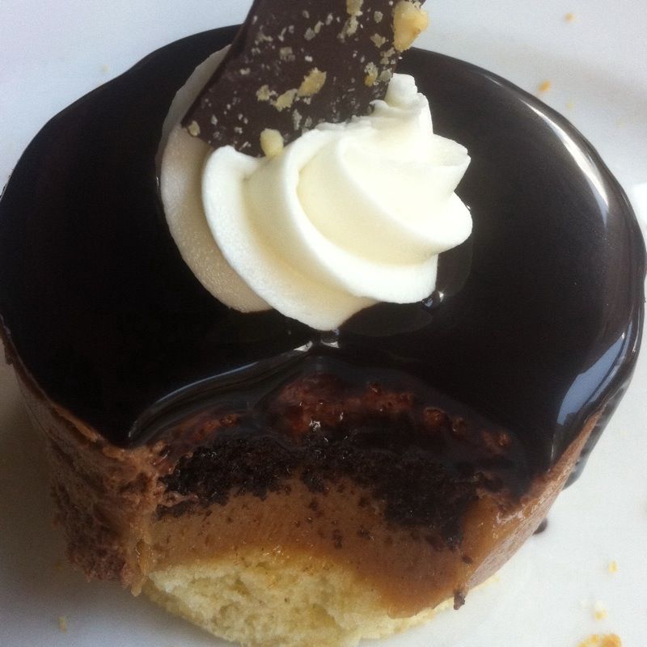

Doces
Musse de amendoim

Ingredientes
- 1 pote de pasta de amendoim tipo Amendocrem (250 g)
- 1 xícara (chá) de açúcar
- 1 lata de creme de leite
- 1 envelope de gelatina sem sabor
- 3 colheres (sopa) de água
- 2 claras
- Cobertura para sorvete sabor caramelo para decorar
Modo de preparo
- Bata a pasta de amendoim com o açúcar até creme esbranquiçado; junte o creme de leite.
- Hidrate e dissolva a gelatina; bata no creme. Incorpore as claras em neve.
- Distribua em taças, gele 4 horas e decore com a cobertura de caramelo.